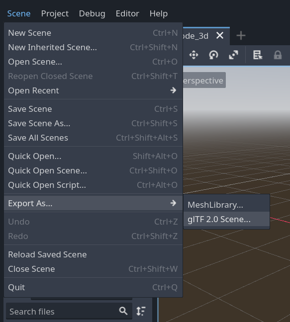

Exporting 3D scenes
Overview
In Godot, it is possible to export 3D scenes as a glTF 2.0 file. You can
export as a glTF binary (.glb file) or glTF embedded with textures
(gltf + .bin + textures). This allows you to create scenes in Godot,
such as a CSG mesh blockout for a level, export it to clean it up in a
program such as Blender, and then bring it back into Godot.
Note
Only Blender 2.83 and newer can import glTF files exported by Godot.
To export a scene in the editor go to Scene > Export As... > glTF 2.0 Scene...

Limitations
There are several limitations with glTF export.
No support for exporting particles since their implementation varies across engines.
ShaderMaterials cannot be exported.
No support for exporting 2D scenes.
See also
3D scenes can be saved at runtime using runtime file loading and saving, including from an exported project.